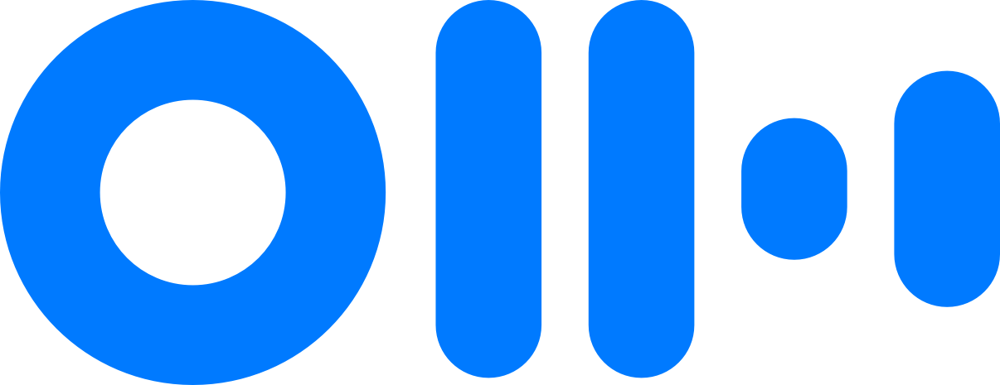
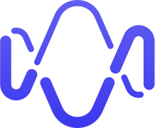
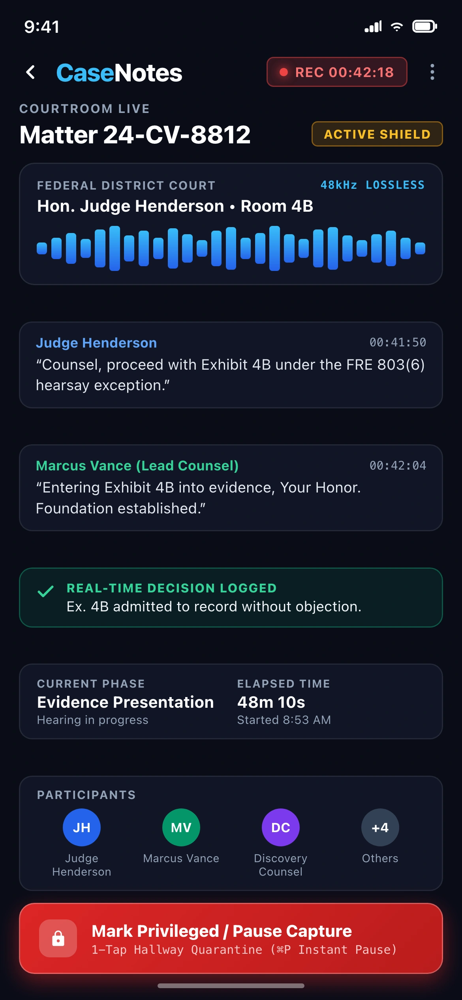
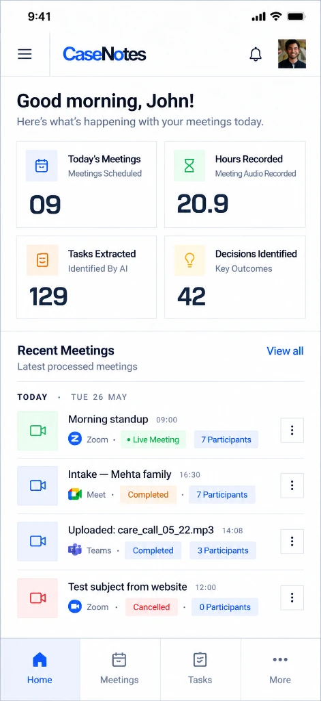
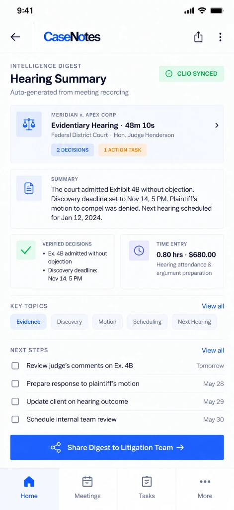

Role
Founding Product Designer (0-to-1)
Where every conversation is part of a case, and every record carries the weight of privilege.

CaseNotes is an AI meeting notetaker built specifically for lawyers who cannot treat sensitive client consultations like sales calls.
Designed around privilege, not just transcription. Every client conversation may become part of a case file, subject to discovery, privilege review, and bar association conduct rules. CaseNotes treats "can this record exist, and who can see it" as a core design constraint, not a buried settings toggle.
Built as matter memory, not an isolated meeting log. Summaries attach directly to active cases. Decisions, court deadlines, and privilege flags connect across the matter's lifecycle, routing straight to assignees without paralegals manually re-entering notes into practice management software.
Higher-accuracy transcription models do not solve the core failure modes of legal note-taking:
General tools compete on raw transcription speed and automated email summaries. In legal practice, that ignores confidentiality requirements, privilege logs, and ethical walls.


I observed 12 live client meetings and case conferences across four small-to-midsize firms, conducted 7 follow-up interviews with partners, associates, and paralegals, and audited published AI notetaker guidance from Mayer Brown, Cahill, and the American Bar Association (ABA).
Associates used personal, undocumented rules to pause recorders during settlement talks, creating firm-wide inconsistency.
Paralegals spent hours re-typing identical meeting notes into practice management software, document drives, and billing logs.
Lawyers treat internal team huddles and privileged client sessions differently, but standard tools handle both identically.
This work is confidential. I'd be happy to share this design over the call.
Principle 1: The lawyer controls whether a record exists in real time. A one-tap shortcut pauses capture mid-sentence and marks the segment privileged, going off the record without breaking conversational flow.
Principle 2: Every output is linked to a matter. Summaries attach directly to the case record, carry privilege tags, and stay restricted behind firm ethical walls.
This work is confidential. I'd be happy to share this design over the call.
CaseNotes links with firm calendars and practice management software. Before a meeting begins, it checks the matter assignment and applies inherited privilege defaults (litigation calls default to privileged and restricted; firm administrative meetings default to open).
This work is confidential. I'd be happy to share this design over the call.
During calls, CaseNotes stays ambient: no bot avatars or scrolling transcript text. A discreet indicator shows recording status, and a single shortcut pauses capture for sensitive discussions.
This work is confidential. I'd be happy to share this design over the call.
Post-meeting summaries file directly to the case: context, decisions, assignees, deadlines, and segment-by-segment privilege tags. Raw transcripts remain in a secondary drawer to minimize discovery exposure.
This work is confidential. I'd be happy to share this design over the call.
In commercial litigation, an AI hallucination is not an interface hiccup; it is a legal liability that risks court sanctions, breach of client privilege, and disciplinary bar proceedings. Following landmark rulings like Mata v. Avianca and ABA Formal Opinion 512, CaseNotes was architected around a strict principle: all answers, summaries, and action items must be 100% derived from extracted meeting data—with zero invented facts.
Synthesizes only what was explicitly spoken. If an opposing party's argument or settlement term was not discussed, the system triggers an explicit refusal rather than inferring.
Every synthesized point links to an immutable millisecond audio timestamp and verified biometric voiceprint for courtroom-grade evidentiary verification.
Audio, transcripts, and embeddings reside in isolated private pods. Customer data is strictly never used to train foundation models, with cryptographic SHA-256 audit trails.
This work is confidential. I'd be happy to share this design over the call.
Privilege detection and structured artifact extraction run in parallel across the meeting audio stream:
Voice prints identify recurring participants. Unrecognized speakers are checked against the firm's conflict database to flag potential ethical breaches.
Conflict CheckThe dialogue is split into logical topic blocks based on subject shifts rather than arbitrary minute intervals (~8 semantic blocks for a typical 45-minute session).
Semantic ChunkingSettlement numbers and strategy points become Decisions. Commitments turn into Action Items with owners and dates. Work product phrasing is flagged for lawyer confirmation.
Automated ExtractionConsensus shifts and critical witness statements receive exact audio timestamps for rapid verification.
10s Audio ScrubbingStructured outputs bundle into the standardized case record and sync to practice tools under role-specific permission rules.
Single Model Call per MeetingThis work is confidential. I'd be happy to share this design over the call.
This work is confidential. I'd be happy to share this design over the call.
Individual meeting notes expire in days. Cross-meeting case memory compounds over months of litigation:
Tracks how theories and settlement parameters evolve across multiple client and opposing counsel sessions.
Drafts billable time entries matched to UTBMS activity codes alongside task checklists.
Maintains an exportable registry of decisions tagged by privilege tier for discovery production.
Audits attendee rosters against ongoing firm conflict checks to prevent inadvertent ethical walls breaches.
Monitors associate and paralegal case allocation to balance courtroom preparation workloads.
Flags commitments tied to statutory court filing deadlines that remain unassigned or incomplete.
This work is confidential. I'd be happy to share this design over the call.
CaseNotes avoids standalone silos by syncing structured data directly into core legal software:
This work is confidential. I'd be happy to share this design over the call.
Focuses on strategic decisions, exposure risk, billable time capture, and staffing.
Prioritizes research tasks, motion drafting deadlines, and timestamped source citations.
Tracks court filing dates, document requests, witness schedules, and docket items.
This work is confidential. I'd be happy to share this design over the call.
Litigators spend nearly 40% of their working hours away from their desks—walking between federal courtrooms, sitting in witness preparation rooms, or traveling to multi-day depositions. CaseNotes' mobile companion is not a stripped-down reader; it delivers full desktop parity tailored for mobile ergonomics: attending live hearings with one-tap privilege controls, reviewing instant post-meeting structured summaries, capturing UTBMS billable hours, and running grounded AI queries right from the courthouse corridor.
Dial into sensitive client calls or depositions on mobile with real-time speaker diarization and a thumb-accessible 1-tap "Mark Privileged / Pause Capture" button to instantly quarantine confidential hallway conversations.
Receive verified executive digests within 10 seconds of hanging up. Review extracted decisions, assigned motion tasks, and auto-generated UTBMS billable time entries (e.g. 0.8h Code L120) with one-tap sync to Clio.
Query the matter memory in plain English (e.g., "What did Dr. Moore concede regarding the patent priority date?") with zero hallucination, citing exact audio timestamps and protected by FaceID authentication.



Legal AI products don't fail on features—they fail on trust. ABA Formal Opinion 512 requires attorneys to understand how their AI tools handle client data before using them. CaseNotes was designed to make compliance visible, not buried in a settings page.
When the capture gate is triggered, the UI shifts to a high-contrast visual state confirming that zero audio is being recorded or processed—no ambiguous icons, no buried toggles. Opposing counsel walks in? One tap, and the entire capture pipeline halts with full-screen confirmation.
The interface explicitly communicates that raw audio and un-saved transcripts are ephemeral—permanently destroyed after the structured summary is generated. Every screen shows retention status so attorneys can answer client questions about data handling in real time.
Designed from day one to support SOC 2 Type II, HIPAA/BAA, and ISO 27001 standards. Client data never trains third-party consumer LLMs—a non-negotiable constraint that shaped every AI pipeline decision.
This work is confidential. I'd be happy to share this design over the call.
CaseNotes doesn't live in isolation. It's designed as a core module within the broader Omnis ecosystem—a unified legal operations platform where meeting transcripts, medical chronologies, client communications, and case documents converge into a single matter-linked intelligence layer. Every meeting captured by CaseNotes becomes structured data that flows across the firm's entire tech stack.
One-click push of privileged summaries, extracted deadlines, and UTBMS time entries directly into Clio, PracticePanther, and MyCase—no re-typing, no copy-paste across tabs.
Memos, transcripts, and AI-generated summaries are securely exported to NetDocuments or iManage, inheriting the firm's existing ethical wall permissions and matter numbering.
Bi-directional sync with Outlook and Google Workspace ensures the AI knows which matter it's joining before the call starts—pre-loading case context, privilege rules, and attendee roles.
Meeting intelligence feeds directly into the Omnis CRM—linking transcripts to client records, medical chronologies, deposition summaries, and billing data in a single unified matter timeline.
Data captured in CaseNotes enriches MedChron medical record timelines, LitDraft document generation, and DepoLink deposition workflows—creating a compound intelligence advantage across the firm.
A RESTful API allows enterprise IT teams to build custom integrations—connecting CaseNotes meeting data to proprietary case management systems, conflict-check databases, and compliance reporting tools.
This work is confidential. I'd be happy to share this design over the call.
Designed an interconnected matter-linked architecture rather than generic transcription screens, supporting multi-role legal workflows.
Integrated ethical walls, privilege logs, and discovery defensibility into the core product rather than treating compliance as an afterthought.
Created structural boundaries for four distinct user tiers, ensuring sensitive work product is never exposed to unauthorized recipients.